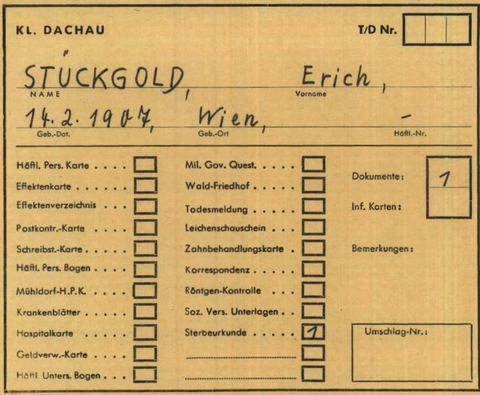
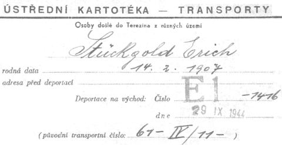
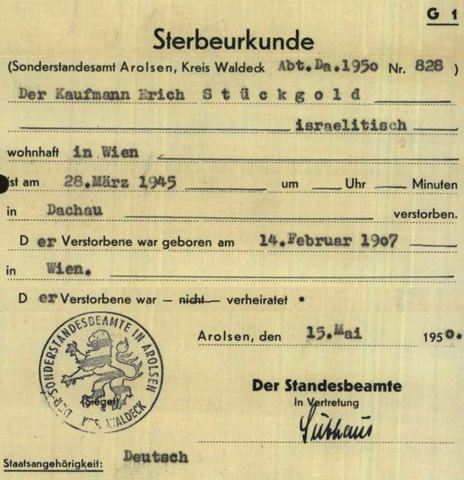
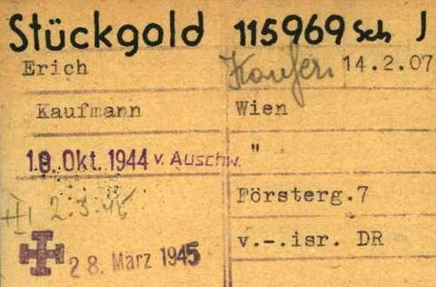

Erich Stückgold
1907–1945
Life events
| Born | 14 Feb 1907 · Vienna, Austria Map · Book 1907/1 IV. Volume 1907. Date 14.02.1907 |
|---|---|
| Married | 16 Aug 1939 · Edith Weiss · Vienna, Austria Map |
| Lived | 24 Sep 1942 · 1020 Förstergasse 7, Vienna, Austria Map |
| Departure | 25 Sep 1942 · Deported from Wien to Theresienstadt |
| Departure | 29 Sep 1944 · Deported from Terezín to Auschwitz |
| Arrival | 10 Oct 1944 · Germany Map |
| Died | 28 Mar 1945 · Dachau Concentration Camp, Dachau, Bavaria, Germany Map · Murdered by Nazis in the Holocaust in Holocaust. Prisoner ID: 40027 |
Family
Erich Stückgold1907–1945

Edith Weiss1905–1986
Photos

Erich Stückgold

Erich Stückgold
Erich Stückgold

Erich Stückgold
Erich Stückgold
Erich Stückgold